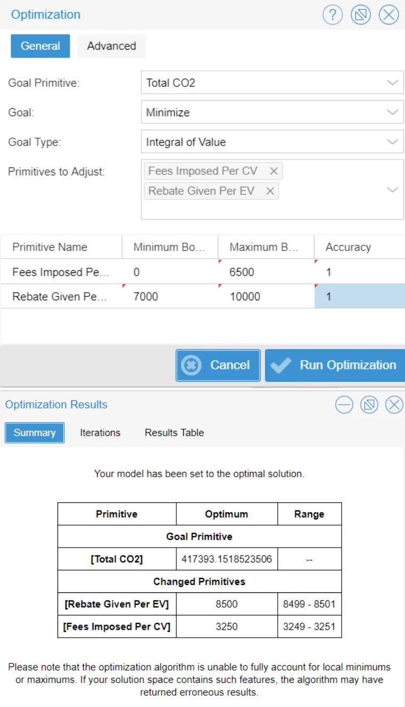
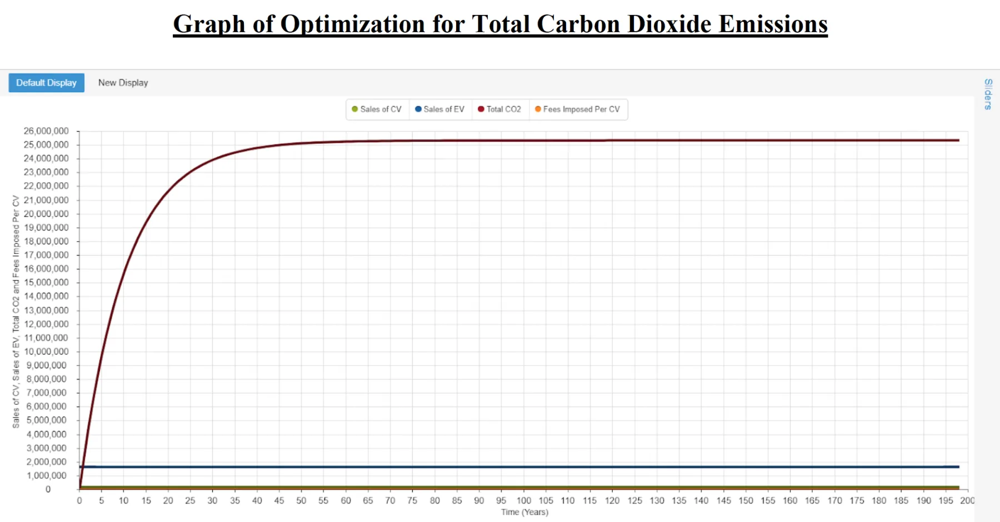
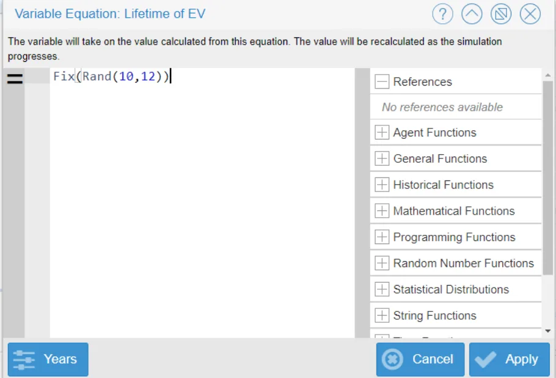
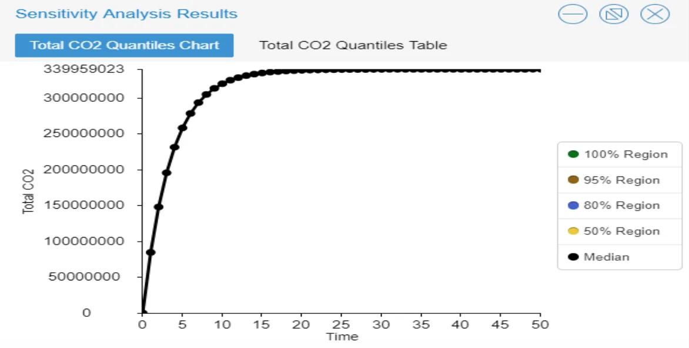
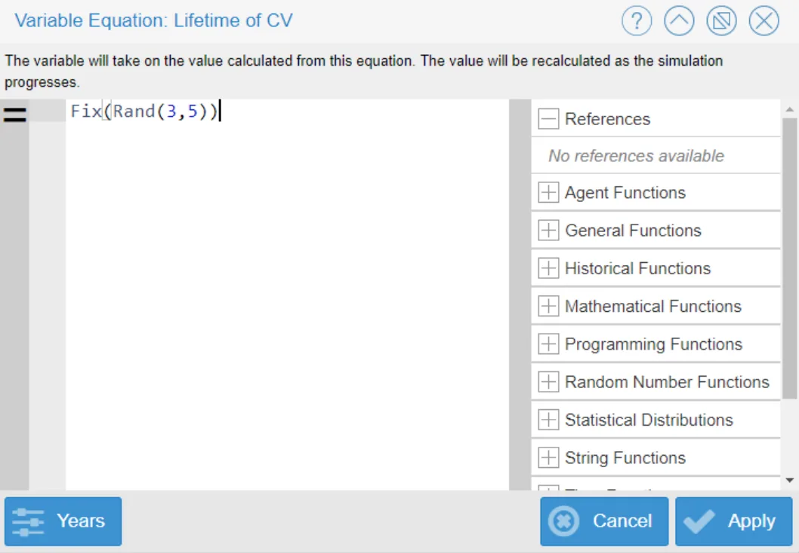
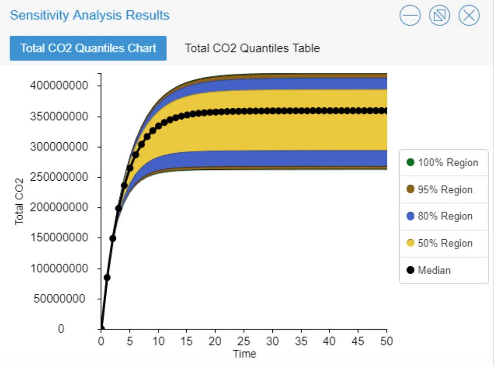
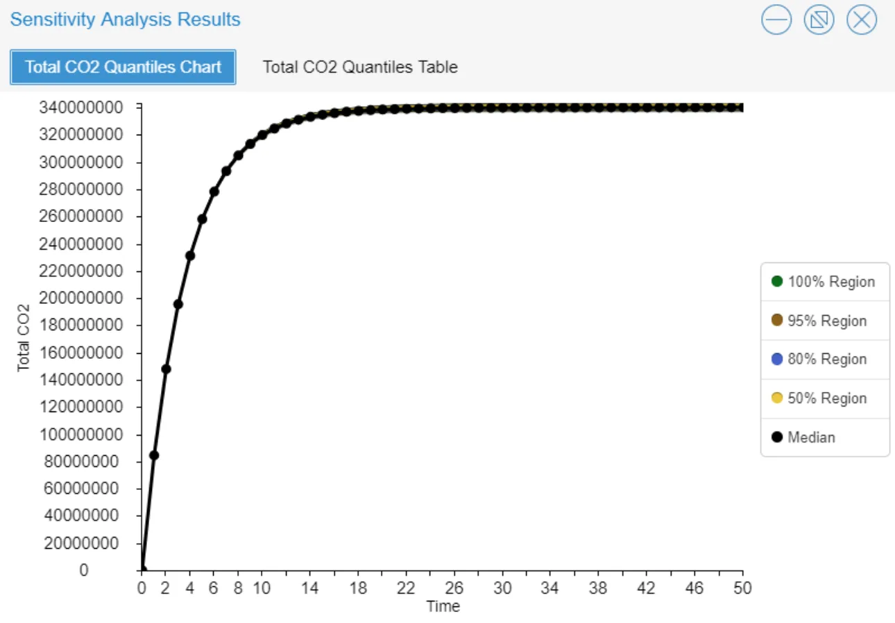
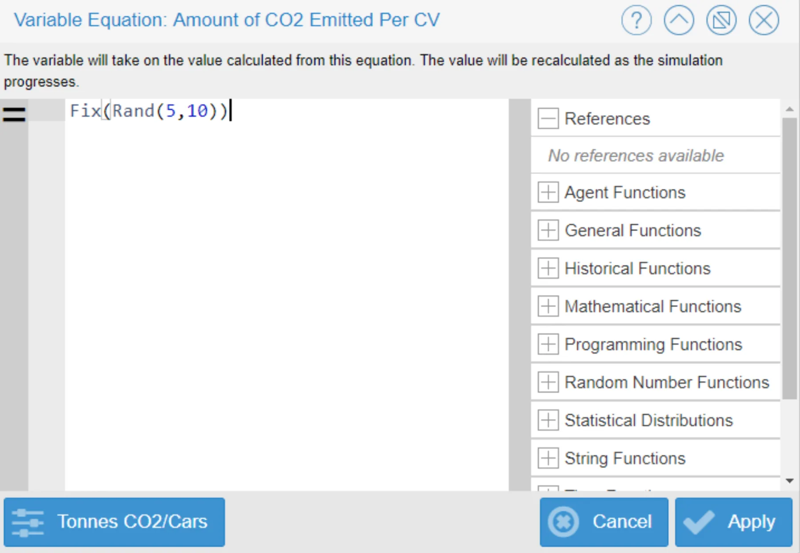
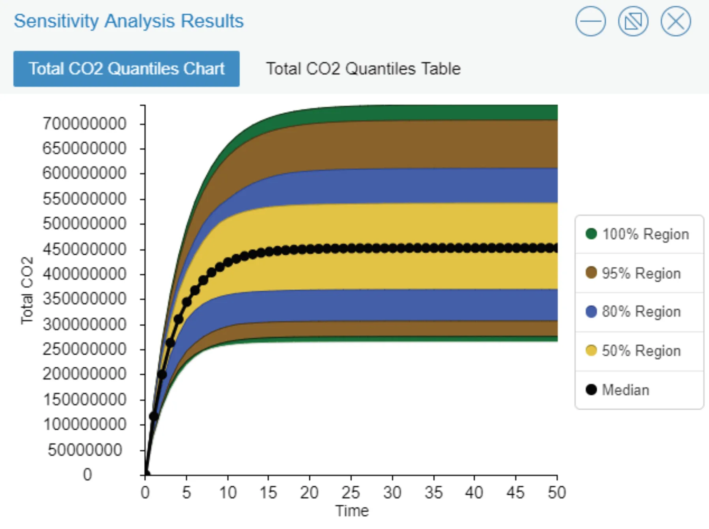

UCLA coursework, 2014 to 2018
Conceptualizing the Shift from Conventional Vehicles to Electric Vehicles: Modeling a Proposed 'Feebate Program'
Abstract:
This model manifests a palpable representation of a conceptual Feebate Program that advocates for the reduction of conventional vehicles, and accentuation of electric vehicles. Essentially, the model illustrates the effects of altering sales in conventional vehicles and electric vehicles in the state of California - a shift that underscores the dramatic impact each vehicle has on the atmosphere’s global carbon content. In this model, the juxtaposing roles of rebates and fees are intertwined into a single program (a feebate). The Feebate Program symbolizes the contrasting binaries at work here: Both rebates offered for electric vehicles and fees imposed on conventional vehicles emblemize the incentives for purchasing electric vehicles, by increasing the total amount of electric vehicles being sold.
This purchase-price program is assumed to be the largest force impacting consumer decisions; the larger the rebate offered per electric vehicle, and the larger the fee imposed per conventional vehicle, the higher the rate of electric vehicles being purchased. However, the issue with using an economic model to explore the impacts on an atmospheric scenario, stems from the flow of cash in the economy (the ‘Total Fund Balance’ in the model). The cash flow is constantly fluctuating and can neither be too large to strip the economy of too much money, nor too insignificant to hinder the optimum flow within the economy itself.
Although this model is economic in nature, it emphasizes the environmental impact of consumer purchases — electric vehicles exude drastically lower rates of carbon dioxide than conventional vehicles. Ultimately, this model will achieve an overall reduction in total atmospheric carbon dioxide vis-à-vis the shift in consumer purchases from conventional vehicles to electric vehicles.
Description of Feebate Model:

Stocks: This model is comprised of three stocks: ‘Total Fund Balance,’ ‘Number of Conventional Vehicles,’ and ‘Number of Electric Vehicles.’ The initial value for the ‘Total Fund Balance’ stock was set to $100,000,000 dollars - an amount large enough to simulate the conceptual Feebate Program of absorbing fees and distributing rebates. This was the only stock set to have a finite number—both the ‘Number of Conventional Vehicles’ stock and the ‘Number of Electric Vehicles’ stock, representative of the number of the cars in production between the two types, were set to zero. This initial value of zero allows for the total effectiveness of the feebate program to rise to the surface, creating a sense of scale in the impact between conventional vehicles and electric vehicles on the environment.
Data provided by online sources indicated the average rebate offered for an electric car is around $7,000 dollars - and the average number of electric cars in production in the state of California is roughly 142,856.
Flows: There are 6 flows in the Feebate Model. The ‘Total Fund Balance’ stock is comprised of two flows: ‘Fees Collected’ (the source of the stock’s monetary collection), and ‘Rebates Paid’ (the source of the stock’s monetary loss). The ‘Fees Collected’ input flow is summed by the influence of three variables: The ‘Sales of Conventional Vehicles,’ ‘Fees Imposed per Conventional Vehicle,’ and a hypothetical ‘Added Late Fee,’ (discussed below, used when testing Pulse Disturbance).
The total ‘Fees Collected’ flow is calculated by multiplying the variables ‘Sales of Conventional Vehicles’ and ‘Fees Imposed per Conventional Vehicle,’ with the addition of a possible ‘Added Late Fee’ variable. The output flow for the ‘Total Fund Balance’ stock, ‘Rebates Paid,’ is calculated through the multiplication of two variables - ‘Rebate Given per Electric Vehicle,’ and ‘Sales of Electric Vehicles’ (discussed below). The ‘Number of Conventional Vehicles’ stock is likewise comprised of two flows: The ‘Sales of Conventional Vehicles,’ and the number of ‘Retired Conventional Vehicles.’
The input flow ‘Sales of Conventional Vehicles’ is dependent on a single converter: ‘Buyer Response to Conventional Vehicle Fees’ (discussed below). The output flow ‘Retired Conventional Vehicles’ is derived from stock itself, the ‘Number of Conventional Vehicles,’ divided by the ‘Lifetime of Conventional Vehicles’ variable (discussed below).
The remaining two flows in the model, 'Sales of Electric Vehicles' and 'Retired Electric Vehicles,' comprise the 'Number of Electric Vehicles' stock. The flows of this stock mirror the flows of its counterpart, conventional vehicles. The input flow is derived from a single converter: ‘Buyer Response to Electric Vehicle Rebates.’ Similarly, the output flow of the number of ‘Retired Electric Vehicles’ is calculated by dividing the ‘Number of Electric Vehicles’ stock by the ‘Lifetime of Electric Vehicles’ variable (discussed below).
Variables: Seven variables influence the oscillations witnessed throughout the model, altering the dynamics of the flows and stocks discussed above. Each flow has a minimum of one variable influencing its total input or output. For instance, the ‘Fees Collected’ flow is dually impacted by the ‘Added Late Fee’ variable, and the ‘Fees Imposed Per Conventional Vehicle’ variable. During the initial run of the model, ‘Fees Imposed Per Conventional Vehicle’ was set to zero dollars. By setting the variable to an initial state of zero, essentially having no impact on the system whatsoever, the facet of carbon dioxide in the system was fully emphasized — without the influence of an implemented fee for the purchase of a conventional vehicle, the sale of conventional vehicles would continue to stay constant or rise.
The 'Fees Imposed Per Conventional Vehicle' variable is meant to directly influence the buyer's decision to purchase a conventional vehicle or not. This variable was set to be a slider that allows for fluidity between multiple scenarios, denoting the effect of a zero-dollar fee per conventional vehicle, compared to that of a $3,000 dollar fee per vehicle, for instance.
The ‘Rebate Given Per Electric Vehicle’ variable plays the same role as its counterpart; it directly influences the buyer’s decision to purchase an electric vehicle or not. If the rebate offered is too small to influence the total cost of the electric car, which is more expensive than a conventional vehicle, the buyer will most likely turn to conventional vehicles.
The ‘Rebate Given Per Electric Vehicle’ variable was likewise set to be a slider, allowing for a multi-faceted influence through various scenarios of rebates offered. The initial rebate was ascribed $7,000 dollars, with a max rebate offered at $10,000 dollars. This value was chosen based on the average value given for rebates for ‘clear air vehicles’ in the state of California. According to the California Clean Vehicle Rebate Project administered by CSE for the California Air Resources Board, “California residents get up to $7,000 for the purchase or lease of a new, eligible zero-emission or plug-in hybrid light-duty vehicle.”
The variables ‘Lifetime of Conventional Vehicle’ and ‘Lifetime of Electric Vehicle,’ refer to the battery life of each vehicle. The average battery life of a conventional vehicle is four years, while the average battery life of an electric vehicle is roughly 12 years. Based on this observation, conventional vehicles have quicker retirement rates than electric vehicles: the longer the battery life of a vehicle, the longer a vehicle stays in production. This assumption does not include the percentage of individuals who replace car batteries.
The remaining three variables are at the core of this model’s discovery: the influence of conventional vehicles and electric vehicles on the total carbon dioxide content in the atmosphere. The ‘Amount of CO2 Emitted Per Conventional Vehicle’ variable is set at 5.19 tonnes of CO2. This amount is more than five times that of the ‘Amount of CO2 Emitted Per Electric Vehicle,’ a trivial 0.98 tonnes of CO2.
These two variables, along with the ‘Number of Conventional Vehicles’ stock and ‘Number of Electric Vehicles’ stock, determine the final variable: ‘Total Carbon Dioxide Content.’ The ‘Total Carbon Dioxide’ variable was estimated through the following formula: Total Carbon Dioxide = ([Number of CV] * [Amount of CO2 Emitted Per CV]) + ([Number of EV] * [Amount of CO2 Emitted Per EV]). This variable records the amount of carbon dioxide produced by both conventional and electrical vehicles.
Converters:
The model’s two converters, ‘Buyer Response to Conventional Vehicle Fees’ and ‘Buyer Response to Electric Vehicle Rebates,’ are symbolic of the force driving the entire model: The Feebate Program. The higher the fee imposed per conventional vehicle, the more likely the buyer response will to shift towards the purchase of electric vehicles. Likewise, the higher the rebate offered for electric vehicles, the more likely the buyer response will shift away from conventional vehicles and towards electric vehicles. The buyers’ response is the key to reducing the total amount of carbon dioxide in the model.
Confidence Building & Sensitivity Analysis Testing:
Confidence Building: Optimization was incorporated into the variables ‘Fees Imposed Per Conventional Vehicle,’ and ‘Rebate Given Per Electric Vehicle.’ Using these two variables, the model was optimized in order to minimize the ‘Total Carbon Dioxide’ variable. The minimum bound for the variable ‘Fees Imposed Per Conventional Vehicle’ was set to zero dollars; the maximum bound was set to $6,500 dollars. These minimum and maximum bounds come from the minimum and maximum values that were set to the slider for the variable.

Similarly, the minimum value for ‘Rebate Given Per Electric Vehicle’ variable of $7,000 dollars, and the maximum value of $10,000 dollars, stems from the minimum and maximum possible values set for the slider of the variable. The results from this optimization illustrate that the optimal minimum amount of tonnes of carbon dioxide will be produced if the ‘Fees Imposed Per Conventional Vehicle’ variable is set to $3,250 dollars, and ‘Rebate Given Per Electric Vehicle’ is set to $8,500 dollars.

Monte-Carlo Sensitivity Analysis:
The sensitivity of this model was tested on the premise of four variables: ‘Lifetime of Elective Vehicles,’ ‘Lifetime of Conventional Vehicles,’ ‘Amount of CO2 Emitted per Electric Vehicle,’ and ‘Amount of CO2 Emitted per Conventional Vehicle.’ The fix function was used in all four of the Monte-Carlo sensitivity analysis tests. The employment of the fix function was to provide a simulation without randomness over time. The output of the model is fully determined by the parameters and initial conditions. Although the values used for the variables ‘Lifetime of Electric Vehicle,’ ‘Lifetime of Conventional Vehicle,’ ‘Amount of CO2 Emitted per Electric Vehicle,’ and ‘Amount of CO2 Emitted per Conventional Vehicle,’ have slightly differing values for the given parameter, it is with certainty that these values do not change over time.
Realistic values for each of the variables were chosen in order to see how sensitive the model is too small, yet still plausibly effective, changes in the input value for the variable. Using the fix function, the parameter value changes randomly between simulations — and each simulation that is ran is a deterministic solution. For the variable ‘Lifetime of Electric Vehicle,’ the equation of Fix(Rand(10,12)) was used to create a Monte-Carlo sensitivity analysis test. The values of 10 and 12 were chosen for the minimum and maximum range, in an attempt to observe the model’s true sensitivity to other potentially valid values for the variables.
The results below illustrate that changing the value for the variable ‘Lifetime of Electric Vehicles’ does not have a large effect on the total amount of carbon dioxide produced, measured by the variable ‘Total Carbon Dioxide.’


For the 'Lifetime of Conventional Vehicles' variable, a Monte-Carlo sensitivity analysis test was created using the equation Fix(Rand(3,5)). A value of 3 was chosen for the minimum and the value of 5 was chosen for the maximum. These minimum and maximum values were determined by the knowledge provided by the American Automobile Association, which expressed an average short battery lifetime of conventional cars of 3 years, and average long battery lifetime of conventional cars at 5 years.
The results below illustrate that changing the value for the variable ‘Lifetime of Conventional Vehicles’ causes a larger variation in the total amount of carbon dioxide, much more than changing the value for the variable ‘Lifetime of Electric Vehicles.’


For the ‘Amount of CO2 Emitted per Electric Vehicle’ variable, the fix function was once again used. The equation Fix(Rand(0,2)) was employed to simulate how sensitive the model is to changes in the amount of the variable itself (CO2). The minimum value was set to 0 - it's possible no carbon dioxide may be emitted from the electric vehicle. The maximum value was set to 2, assuming a small portion of carbon dioxide may be emitted over the course of the vehicle's lifetime. Similar to the sensitivity analysis for the variable ‘Lifetime of Electric Vehicles,’ changing the values for the amount of carbon dioxide emitted per electric vehicle does not have a large effect of the total amount of carbon dioxide produced in the atmosphere.
The results below represent the changes in carbon dioxide emitted per electric vehicle, based on the parameters described above.

The final sensitivity analysis test was conducted for the 'Carbon Dioxide Emitted per Conventional Vehicle' variable. For this simulation, the equation Fix(Rand(5,10)) was used. This minimum value was estimated based on the maximum value ascribed for the variable ‘Carbon Dioxide Emitted per Electric Vehicle,’ holding true that conventional vehicles emit more carbon dioxide than their counterpart. The maximum value of 10 was selected to test sensitivity for the model, taking into account the notion of older model cars producing more carbon dioxide than newer model cars.


Similar to the to the sensitivity analysis for the variable ‘Lifetime of Conventional Vehicles,’ changing the values for the variable ‘Carbon Dioxide Emitted per Conventional Vehicle’ creates a large variation in the effect of the total amount of carbon dioxide produced. Through this discovery, it is determined the Feebate Model is most sensitive to changing the values for the variables related to conventional vehicles - ‘Lifetime of Conventional Vehicle’ and ‘Carbon Dioxide Emitted per Conventional Vehicle - rather than the variables related to electric vehicles - ‘Lifetime of Electric Vehicle’ and ‘Carbon Dioxide Emitted per Electric Vehicle.’
Feebate Model Incites Policy Change:
Through the implementation of sliders in the Feebate Model on the variables 'Fees Imposed Per Conventional Vehicle' and 'Rebates Given Per Electric Vehicle,' a proposed bill can be introduced to enact policy change. In theory, a government bill emblemizing this Feebate Model would drastically alter the amount of carbon dioxide emitted into the atmosphere every year. This bill would dictate the amount of fees imposed when purchasing conventional vehicles, and the amount of rebates given when purchasing electric vehicles.
The heart of this policy change is demonstrated in the palpable results derived from the Sensitivity Testing and Optimization graphs. Increasing rebate amounts given for electric vehicles from $7,000 dollars (the base model) to $8,500 dollars (optimization model), coupled with an increased fee for conventional vehicles from zero dollars (current) to $3,250 dollars (optimization model), would drastically reduce the amount of carbon dioxide produced from 340,000,000 Tonnes to 25,000,000 Tonnes. A 92.65% decrease.